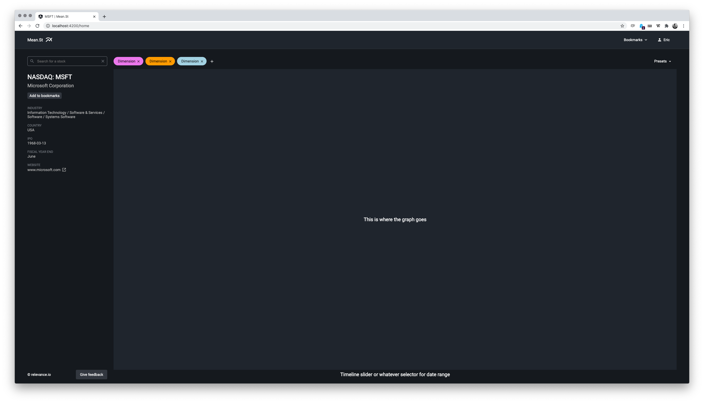
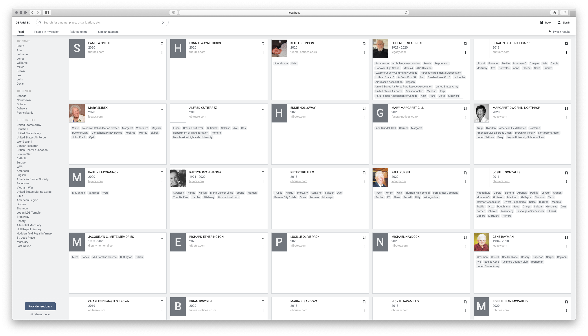

Labs
We build apps and other experiements on top of the Relevance Retroaction Engine and sometimes we feel the result is worth sharing.
All our lab projects are built using the Relevance SDK on top of the Relevance Retroaction Engine.

Mean.St
Mean.St is a innovative way to get a quick and meaningful view of a stock performance overtime.

Departed.io
Departed.io is designed to simplify death notices discovery for the most demanding genealogy researcher.